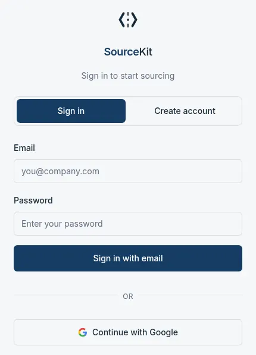
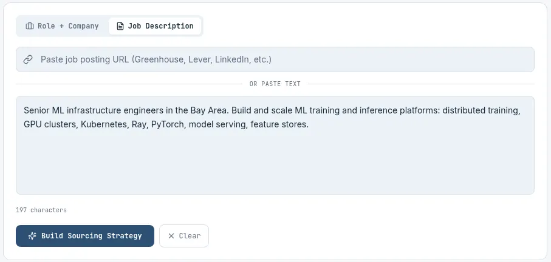
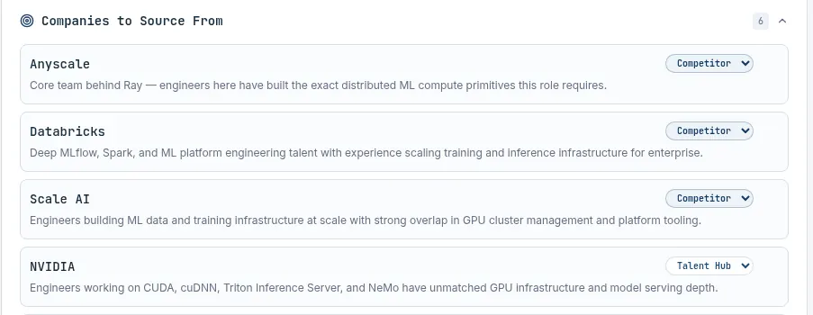
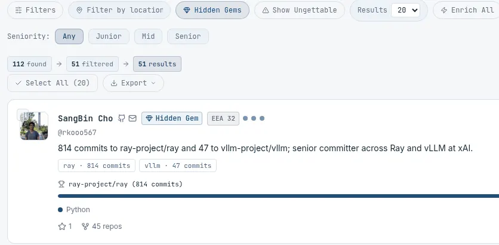
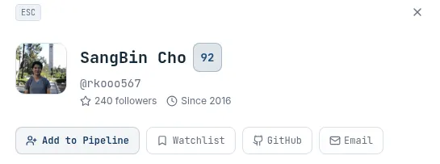

SourceKit Pilot Guide
1Sign in

Go to getsourcekit.vercel.app and sign in with Continue with Google or email and password, using the address your invitation was sent to.
The pilot is invite-only, so other addresses are not let in.
2Paste a job description

In New Search, choose Job Description, paste the full text or a posting link, and click Build Sourcing Strategy.
More detail on role, team and must-haves gives a sharper strategy and better scores; the build takes 30-60 seconds.
3Check the strategy, then search

Edit any of the four parts below, then click Search with this strategy at the bottom of the page.
Every entry is a suggestion, and a minute of edits here steers the whole search.
The four parts of a strategy
| Part | What it shows | What you can do |
|---|---|---|
| Target repositories | Open-source projects where the right engineers work, each with a one-line reason. | Remove off-target repos or add your own. |
| Companies | Teams likely to have the talent, tagged Competitor, Adjacent or Talent Hub. | Change a tag or add a company. |
| Skills | Must Have (blue chips) and Nice to Have (gray chips). Must-haves weigh most in scoring. | Add or remove skills. |
| EEA signals | Evidence of Exceptional Ability, such as owning a core project or published technical work. | Switch off any you do not need. |
4Scan results and Hidden Gems

Candidates are ranked by a 0-100 fit score with a one-line reason; click Hidden Gems to see only strong engineers with a low public profile.
Hidden gems hear from recruiters less often, so they are more likely to reply.
5Add to your pipeline

Click a name to open the profile, then click Add to Pipeline. The candidate lands in the Sourced column of the Pipeline tab.
The board tracks each person from Sourced to Contacted, Recruiter Screen and Moved to ATS.
MORE TOOLS
| Tool | What it does |
|---|---|
| People Search | Runs one query across Exa, Harmonic, GitHub and now Firecrawl. Firecrawl finds people through their GitHub issues, pull requests and research papers. Results are deduplicated, with a badge showing each source. |
| Find emails | Tick up to 25 people and click Find emails; a note reports how many new addresses were found. |
| Bulk Actions | Candidate briefs, outreach drafts, a refined shortlist or a side-by-side comparison for the people you select. |
| History | Every search is saved; reopen or rerun one at any time. |
FAQ
- How long does a search take?
- A strategy takes under a minute and a full search a couple of minutes. You can switch tabs while it runs.
- What are the daily limits?
Per account, each day:
- 25 searches
- 150 enrichments, used by email lookups and extra profile details
- 100 AI calls, used by strategy building, outreach drafts and Bulk Actions
Limits reset at midnight UTC (5pm PT, 4pm PT after Nov 1).
- How do I get the best results?
- Paste the full job description, start with Hidden Gems, and find emails only for your shortlist so enrichments last.
- Why do I not see founders or executives?
- Ungettable candidates (founders, executives, board members and very famous engineers) are hidden by default. Click Show Ungettable to include them.
- Who do I contact for help?
- Reply to Michael Rubino for access issues, questions or feedback. Every note feeds the next build.
ABOUT AND QUICK REFERENCE
SourceKit turns a job description into a sourcing strategy, then finds engineers and scores each one 0-100 on their actual open-source work. The pilot is free and invite-only; a first session takes about 10 minutes.
In short: sign in, paste a job description, check the strategy, turn on Hidden Gems, then add people to your pipeline.